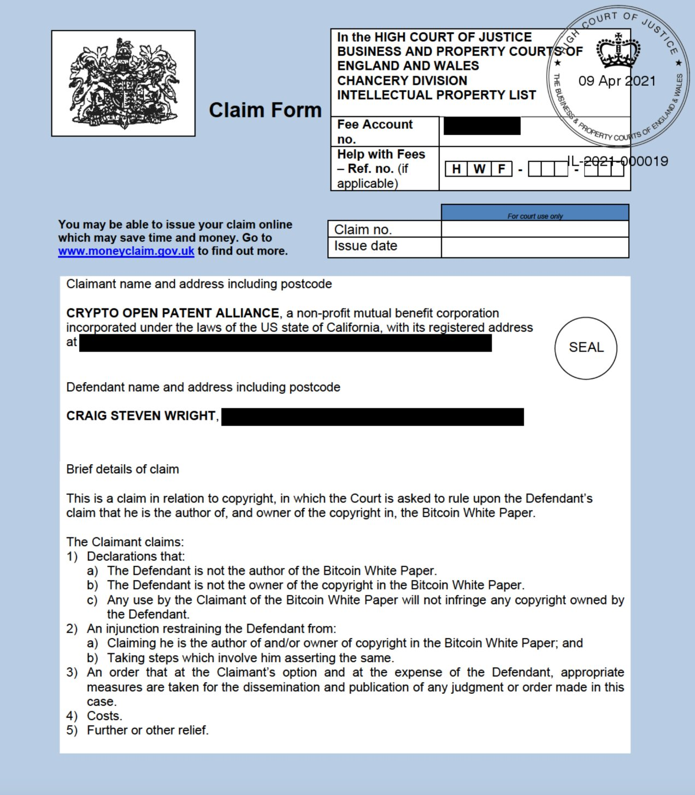

This document aims to provide an exhaustive reference for all legal disputes involving Craig Wright, with original and archival links to all publicly available sources. Key quotations from these sources are provided to make this page a searchable index of statements by legal professionals on Craig Wright's credibility or the strengths of his claims relevant in each case.
Dispute with DeMorgan Information Security Systems Pty Limited (2003-2006)
Accused of Breaking a Non-Compete Clause
Ryan and Anor v Wright and Anor [2003] NSWSC 1011 (2003/11/6)
- original: http://www8.austlii.edu.au/cgi-bin/viewdoc/au/cases/nsw/NSWSC/2003/1011.html
- archive: https://archive.ph/foG52
Judge J McDougall
23 I am satisfied, particularly having regard to the evidence relating to an alleged e-mail approach by Mr Wright to Mr Dave Spencer of the RIC, and to Mr Wright’s dealings with Mr Tristan Geering of the ASX, that there is a serious question to be tried in relation to the alleged breaches by Mr Wright of cl 13 of the shareholders’ agreement. There is evidence that would show, if accepted, that the approaches made by Mr Wright to, or the dealings between Mr Wright and, the ASX and the RIC were conducted not for the benefit of the company, but for the benefit of Mr and Mrs Wright, either directly or through Ridge’s Estate.
25 I am satisfied that there is a real threat that, unless restrained, Mr Wright will continue to approach, or deal with, customers of the company.
27 Further, having regard to the clandestine nature of the dealings between Mr Wright and the company’s customers, I am satisfied that it would not be appropriate to permit Mr Wright to deal with customers of the company on the basis that he do so as the company’s agent and for the benefit of the company. I think that there is a real risk that Mr Wright, if permitted to deal on a limited basis with customers of the company, might seek to undermine the company and its business. In this context, Mr Anthony Wilkes, a system administrator employed by the company and, perhaps, a member (see para [18] above), says in an affidavit that on 15 October 2003 he met and had lunch with Mr Geering of ASX. He says that in the course of that lunch Mr Geering confirmed that Mr Wright “is still working in the ASX”. Further, he says, Mr Geering said that Mr Wright “said openly that he would spend over a million dollars to see DeMorgan go under”.
Convicted of Contempt of Court
Ryan v Wright [2004] NSWSC 749 (2004/8/31)
- original: http://www8.austlii.edu.au/cgi-bin/viewdoc/au/cases/nsw/NSWSC/2004/749.html
- archive: https://archive.ph/s2AEl
Judge J. Gzell
56 It was submitted that a reasonable doubt existed in the absence of direct proof that Mr Wright sent the emails or conducted the telephone conversations charged to his mobile. It was submitted that anyone with access to the internet could have sent the emails using Mr Wright’s email address. It was submitted that anyone with access to his mobile could have made the telephone calls.
58 When the evidence is viewed as a whole the inescapable inference is that Mr Wright sent the emails and Mr Wright made the telephone calls. He was the party with the interest in performing services for ASX, RIC, News, Val Morgan and HREOC. He was the person who signed himself in at ASX on behalf of Ridges. He was the person identified by ASX and News as providing services to them.
62 In my view, the charges against Mrs Wright should be dismissed and a declaration that Mr Wright is guilty of contempt of court in terms of paragraph 1 of the notice of motion should be made.
Ryan v Wright (No 2) [2004] NSWSC 1019 (2004/11/15)
- original: http://www8.austlii.edu.au/cgi-bin/viewdoc/au/cases/nsw/NSWSC/2004/1019.html
- archive: https://archive.ph/I7IGJ
Judge J Gzell
8 In his affidavit and in cross examination Mr Wright swore that he prepared a document for ASX in the name of Ridges because his solicitor advised him not to use the name DeMorgan. No evidence was tendered from the solicitor. I find that explanation implausible and I reject the testimony.
9 Both in his affidavit and in cross examination, Mr Wright spoke of contact with employees of customers of DeMorgan. He said he did not understand the undertakings as restraining him from communicating with employees who were not officers of customers of DeMorgan. There was no basis for Mr Wright to limit his undertakings in that fashion.
13 On the other hand, there was no suggestion of contrition on the part of Mr Wright. Having stated that he disagreed with my findings and had instructed his solicitors to lodge an appeal and he understood a holding appeal had been lodged, he stated:
“In spite of that appeal, if the Court ultimately maintains that I have breached my undertakings and/or the orders of the Court then I apologise to the Court. It was never my intention to breach the undertakings that I gave or the orders of the Court.”
14 In the course of his solicitor’s final submissions, I asked whether Mr Wright freely and willingly apologised to the court. His solicitor took instructions from his client and said he did. I do not accept that belated indication of an apology as a purging of Mr Wright’s contempt. The whole tenor of his affidavit and his manner in the witness box under cross examination was one of belligerent adherence to his views.
23 In my view Mr Wright’s deliberate flouting of his undertaking makes this a serious offence. His lack of contrition exacerbates its seriousness. There is a need to bring home to a contemnor the seriousness of his contempt. For the purposes of the Crimes (Sentencing Procedure) Act 1999, s 5(2) these are my reasons for my determining that a sentence of imprisonment is required in this case. I propose to sentence Craig Wright to a term of imprisonment of 28 days. Under s 46 I am not required to set a non-parole period.
Appeals Rejected
Wright v Ryan & Anor [2005] NSWCA 368 (2005/10/27)
- original: http://www8.austlii.edu.au/cgi-bin/viewdoc/au/cases/nsw/NSWCA/2005/368.html
- archive: https://archive.ph/ihtZX
Judge J.A. Handley
63 The probative force of the new evidence depends in large measure on the appellant’s credibility and reliability. His explanations and interpretations of these and related documents are contradicted at critical points, on which there is no independent evidence to support him. The appellant’s contradictory evidence about the email of 11.16 am on 10 September 2003 raises doubts about his credibility, as does his evidence based on the calls from his mobile phone that day.
Judge J.A. Hodgson
77 I agree with Handley JA that the proposed fresh evidence lacked the necessary credibility and materiality, particularly in circumstances where it depended in essential respects on the appellant’s own credibility, which was strongly under challenge.
Wright v Ryan & Anor [2006] HCATrans 307 (2006/6/15)
- original: http://www8.austlii.edu.au/cgi-bin/viewdoc/au/cases/cth/HCATrans/2006/307.html
- archive: https://archive.ph/u7fjQ
Peters v Asplund & Her Honour, Magistrate O'Shane
Engaged to write a written expert report
Peters v Asplund & Her Honour, Magistrate O'Shane [2008] NSWSC 1061 (2008/10/8, updated 10/10)
- original: http://www8.austlii.edu.au/cgi-bin/viewdoc/au/cases/nsw/NSWSC/2008/1061.html
- archive: https://archive.is/IxXwv
McLennan v The Nominal Defendant
Called as Expert Witness
McLennan v The Nominal Defendant [2010] NSWDC 28 (2010/6/8, updated 6/16)
- original: http://www6.austlii.edu.au/cgi-bin/viewdoc/au/cases/nsw/NSWDC/2010/28.html
- archive: https://archive.is/x0C42
District Court Judge Levy SC
22.(e) Mr Craig Wright was called by the defendant, mid-way through the trial, to support an application made by the defendant to have the plaintiff’s computer produced for forensic examination. In a separate judgment I refused that application. Mr Wright’s evidence had no bearing on any other issues in the case and I have not summarised his evidence in these reasons.
Wolfgram v Racing Queensland Limited
Called as Expert Witness
Wolfgram v Racing Queensland Limited [2011] QCAT 538 (2011/11/3, updated 11/21)
- original: http://www6.austlii.edu.au/cgi-bin/viewdoc/au/cases/qld/QCAT/2011/538.html
- archive: https://archive.is/eBQOB
Mr Brock Miller and Ms Sandra Deane (members of the Tribunal):
[8] Expert evidence was then submitted by Craig Wright and Bradley Schatz. Each of those persons went to great lengths to identify that they were experts in the field of IT security. The Tribunal listened to the extensive evidence of both of those witnesses, but was singularly unimpressed with the evidence of Bradley Schatz whose intent seemed simply to impugn the reputation and methodology of the witness Wright. It became quite obvious that at one point in time, Wright had been subject to certain legal process as a result of his failure to honour an undertaking given to a New South Wales Court. The Tribunal is satisfied that the explanation proffered by Mr Wright in response adequately answered any suggestion that he was an unreliable witness. In fact, we found his evidence to be far more reliable than that of the witness Schatz who did not impress the Tribunal.
Wolfgram v Racing Queensland [2012] QCAT 44 (2012/2/7, updated 2/21)
- original: http://www8.austlii.edu.au/cgi-bin/viewdoc/au/cases/qld/QCAT/2012/44.html
- archive: https://archive.is/iUYE0
Alleged Fraud on W&K Info Defense for IP
Legal Record of W&K Info Defense
Corporation History of W&K Info Defense
- original: http://search.sunbiz.org/Inquiry/CorporationSearch/SearchResultDetail?inquirytype=EntityName&directionType=Initial&searchNameOrder=WKINFODEFENSERESEARCH%20L110000199040&aggregateId=flal-l11000019904-dce79b55-176a-4442-93a7-3c8896316aa2&searchTerm=W%26K%20Info%20&listNameOrder=WKINFODEFENSERESEARCH%20L110000199040
- archive: https://archive.ph/MD9XM
Formation of W&K Info Defense Research LLC by David Kleiman as Managing Director and Sole Shareholder (2011/2/14)
- original 1: http://search.sunbiz.org/Inquiry/CorporationSearch/ConvertTiffToPDF?storagePath=COR%5C2011%5C0216%5C90321539.tif&documentNumber=L11000019904
- archive 1: https://archive.ph/GIGq4
- local 1:
Document
- original 2: https://www.courtlistener.com/docket/6309656/1/4/kleiman-v-wright/
- archive 2: https://archive.ph/xat36
- local 2:
Document
Seizure of W&K by Craig immediately after Kleiman's Death To Enable Transfer of IP
Statements of Claim by Wright against W&K Info Defense (2013/7/25 and 2013/8/13)
- original: https://www.courtlistener.com/docket/6309656/24/11/kleiman-v-wright/
- archive: https://archive.ph/ilNfk
- local:
Document
Documents contained in that file, in order:
- Statement of Claim (2013/8/13) pp. 2-5
- Signed Affidavit to the Facts of the Previous by Wright (2013/8/12) pp. 6-7
- Statement of Claim (2013/7/25) pp. 8-12
- Signed Affidavit to the Facts of the Previous by Wright (2012/8/23) (sic—incorrect year entered on form) pp. 13-15
Wright—Claiming to be the Sole Living Shareholder of W&K—Holds a Shareholders Meeting Appointing J. Wilson as Director (2013/8/16)
(see the Further Affidavit Filed by Wright in Support of His Claim (2013/10/31))
Wright Files 2 Acknowledgements of Liquidated Claim on Behalf of W&K Info Defense with Himself as Named Plaintiff and Defendant (2013/8/19)
- original: https://www.courtlistener.com/docket/6309656/24/30/kleiman-v-wright/
- archive: https://archive.ph/4D1cY
- local:
Document
Wright Files 2 Consent Orders on Behalf of W&K Info Defense signed by him and J. Wilson (2013/8/23)
- original: https://www.courtlistener.com/docket/6309656/24/19/kleiman-v-wright/
- archive: https://archive.ph/saf7Q
- local:
Document
Affidavit by Wright Describing the Shareholders Meeting of 2013/8/16 (made 2013/10/31; filed 2013/11/4)
- original 1: https://www.courtlistener.com/docket/6309656/24/4/kleiman-v-wright/
- archive 1: https://archive.ph/rvg2W
- local 1:
Document
- original 2: https://www.courtlistener.com/docket/6309656/511/12/kleiman-v-wright/
- archive 2: https://archive.ph/vJNzL
- local 2:
Document
Documents contained in the second file, in order:
- Another copy of #1 immediately above: Statement of Claim (2013/8/13) pp. 1-4
- Another copy of #2 immediately above: Signed Affidavit to the Facts of the Previous by Wright (2013/8/12) pp. 5-6
- Signed Affidavit to Additional Claimed Facts Submitted by Wright (2013/10/31) pp. 7-12
Wright's description of the 2013/8/16 shareholder meeting:
23. On 01st August 2013 a shareholders meeting was called for "W&K Info Defense LLC" to be held on the 16th August 2013. The meeting was emailed to the company address as well as send [sic] to the address of the shareholders and company. The shareholding of "W&K Info Defense LLC" was:
- Craig S Wright 50.0%
- David A Kleiman 50.0%
24. The meeting from point 23 meeting [sic] was held on the 16th August 2013. The following people were present:
- Jamie Wilson
- Craig S Wright
25. "W&K Info Defense LLC" was an incorporated partnership. All shares are held jointly. The constitution states there is to be a resident US director. Shares were held jointly as per the US Companies Act, 1956.
26. The following points were moved at the meeting:
- Jamie Wilson will act as director for the purposes of consenting to orders and the company to be wound down.
- The vote was Craig Wright — "Yes". No other parties.
- It was agreed that following the motion to accept the debt owed by the company (W&K Info Defense LLC), it would be closed.
NSW Supreme Court Grants Transfer of IP from W&K Info Defense LLC to Craig Wright (2013/11/6)
- original: https://www.courtlistener.com/docket/6309656/24/22/kleiman-v-wright/
- archive: https://archive.ph/6jyhC
- local:
Document
History of W&K After the IP Transference
Reinstatement of W&K by Uyen Nguyen (2014/3/28)
- original: http://search.sunbiz.org/Inquiry/CorporationSearch/ConvertTiffToPDF?storagePath=COR%5C2014%5C0331%5C58356362.tif&documentNumber=L11000019904
- archive: https://archive.ph/vVOjA
- local:
Document
Reinstatement of W&K by Ira Kleiman (2018/4/12)
- original: http://search.sunbiz.org/Inquiry/CorporationSearch/GetDocument?aggregateId=flal-l11000019904-dce79b55-176a-4442-93a7-3c8896316aa2&transactionId=l11000019904-re-42d2ae10-fbd1-4902-8f7e-f57e746413cf&formatType=PDF
- archive: https://archive.ph/AwX8D
- local:
Document
Fraud on the Australian Tax Office
ATO Investigation into Craig Wright
ATO's reasons for decision for Craig Wright concerning the period 2012-2014 (2014)
- original: https://www.courtlistener.com/docket/6309656/547/3/kleiman-v-wright/
- archive: https://archive.ph/oaa9P
- local copy:
Document
Fabrication of documents
94 ...It follows that these documents (including any related purported invoices or tax invoices) can be considered a nullity based on sham.
Backdating of documents
156 All of the transactions were planned to take place in the same tax period — 1 July 2013 to 30 September 2013. You have admitted to backdating tax invoices to the beginning of that tax period because ‘it made sense to [you]’ because those were the dates on which you had wanted the transactions to occur.
157 The NSW SC settlement agreement appears to be back-dated to 9 July 2013 in order to come within this period, despite the fact that the decision in these matters was handed down in November 2013. This appears to be a deliberate attempt to ensure that the acquisition of the legal title to the W&K software was recorded at a time which enabled you to transfer those rights to DeMorgan and for DeMorgan to supply that software before 30 September 2013.
Wright's Own Lawyer Concludes Substantial Evidence of Fraud
Emails concerning the evidence of Wright's fraud presented to his lawyer (2015/7/3-5)
- original: https://www.courtlistener.com/docket/6309656/510/12/kleiman-v-wright/
- archive: https://archive.ph/8NdAG
- local copy:
Document
Assessment of Andrew Sommer, Wright's lawyer
You can see the differences between the ATO’s records and the records in your submission. The differences are intended to support the position Craig wanted to advance. In each case the “supportive” wording does not appear on the ATO version of the emails but only on the version of the emails contained in the submission of 26 June. ... This is extremely serious.
Wright's lawyer terminates engagement with Wright's company for ethical reasons (2015/7/6)
- original: https://www.courtlistener.com/docket/6309656/510/13/kleiman-v-wright/
- archive: https://archive.ph/BohLo
- local copy:
Document
Statement of Andrew Sommer, Wright's lawyer
Information has been provided to our firm which raises serious questions about the integrity of documents provided by Dr Craig Wright, both to our office and to the Australian Taxation Office. We believe this information to be credible. In these circumstances, we can no longer represent DeMorgan Limited in the disputes it and its subsidiaries has with the Australian Taxation Office.
ATO Investigation into Wright's company C01N Pty Ltd
ATO's reasons for decision for C01N Pty Ltd for the period 1 July 2012 to 30 June 2013 (2016/3/11)
- original: https://www.courtlistener.com/docket/6309656/547/7/kleiman-v-wright/
- archive: https://archive.ph/TAQP7
- local copy:
Document
Sham legal contract & use of forgeries
221 Considered cumulatively, we consider that these anomalies and inconsistencies lead to the conclusion that the purported agreement [between C01N and W&K] amounts to a sham. It is considered that the purported agreement was not intended to create the legal rights and obligations it gives the appearance of creating, but was, rather, intended to be a disguise for some other transaction or for no transaction at all.
222 At the outset, we note that the taxpayer’s contentions rely almost exclusively electronic evidence that cannot be verified by independent third parties, and in some instance has been proven to have been fabricated.
Claim the company owned a “supercomputer” was an egregious lie, supported by multiple frauds and manipulated evidences
224.1 none of the information supplied to the ATO by the taxpayer is sufficiently reliable to support the assertion that it has access to, or built, a supercomputer matching the specifications of the purported C01N supercomputer.
224.2 the results shown on screen of the hardward suggest that someone has manipulated the results in an attempt to replicate the specifications of the purported C01N supercomputer, however, when examined more closely, the results show inconsistencies and errors which should not occur.
...[various evidences are listed]...
224.4 These errors and inconsistencies would not occur if a legitimate system with the specifications claimed to have been acquired by the taxpayer was being interrogated.
...
224.9 ...The most reasonable conclusion to draw from the material presented is that someone has produced reports and then deliberately modified the results, with the intention of misleading the ATO into accepting that a supercomputer, as described by the taxpayer, had been acquired.
224.10 Given Dr Wright’s relevant qualifications and experience we understand that he would have sufficient computer programming skills to be able to make the system appear to be using known commands but program those commands to produce the results he wants to show.
225 From these anomalies, and our conclusions below regarding the purported agreement and payment, we conclude that the taxpayer did not have access to the purported supercomputer. Given Dr Wright’s extensive IT qualifications, it is inconceivable that he was unaware of this fact. We therefore conclude that the evidence provided to us was manufactured by the taxpayer in an attempt to deceive us.
Creation of fraudulent documents to support the claim of a contract betwen C01N and W&K
229 ...In fact, we infer that these documents were created with the intention of deceiving the Commissioner and in order to support the false and misleading statements of the taxpayer.
Claim to be associated with a successful and famous mathematician (Prof David Rees) and passing off software code from a publicly available library as his own
265 Professor Sarah Rees [Professor David’s daughter] indicated that she was only aware of one unpublished paper written by her father and that the content of that paper was later published in an updated form. We also asked to see evidence of the software provided under licence. The taxpayer showed us one piece of software and refused our request to run it. Professor Sarah Rees advised us that her father did not write software. We further note that the software showed to us resembles that available from the CoCoA library. The taxpayer provided no evidence of the ‘algebra’ provided. All four of Professor Rees’ daughters advise they have never heard of the taxpayer or Dr Wright. Professor Sarah Rees also advised that Professor Rees did not undertake consulting work. Accordingy, we do not accept that the taxpayer acquired anything from Professor Rees.
Claims to have made payments in Bitcoin through untraceable means, fabricating a "trust" to explain away lack of evidence
267 The taxpayer has not substantiated that it paid Professor Rees, and has provided anomalous accounts of this. The taxpayer first advised that it had instructed an amount be held in trust for Professor Rees. The taxpayer then advised that it provided private keys to Professor Rees on 28 June 2013. Then it advised the Bitcoin was held in trust for Professor Rees until the keys were released.
...[various anomalies are listed]...
269 The taxpayer has not provided any evidence to substantiate the statement in the background to the Software Development Agreement that Mr Kleiman funded the agreement and then advised that following Mr Kleiman’s death, Hotwire funded the agreement. The taxpayer declined to sign messages within the relevant addresses to evidence that it controlled them, stating that once the keys had been released to third parties, they cannot be recreated.
Reference to the Investigation in the eJournal of Tax Research
- original: https://www.austlii.edu.au/cgi-bin/sinodisp/au/journals/eJlTaxR/2019/16.html
- archive: https://archive.is/l0u8h
- local:
Document
R v Tahiraj
Called as an Expert Witness
R v Tahiraj [2014] QCA 353 (2014/12/19, updated 2015/1/14)
- original: http://www7.austlii.edu.au/cgi-bin/viewdoc/au/cases/qld/QCA/2014/353.html
- archive: https://archive.is/mqh41
Dispute with Reliantco Investments Ltd (2017-2020)
Ramona ANG v Reliantco Investments Ltd [2019] EWHC 879 (Comm) (2019/4/12)
- original: https://www.bailii.org/ew/cases/EWHC/Comm/2019/879.html
- archive: https://archive.ph/diMWe
Ang v Reliantco Investments Ltd & Anor [2020] EWHC 2529 (Comm) (2020/9/24)
- original: https://www.bailii.org/cgi-bin/markup.cgi?doc=ew/cases/EWHC/Comm/2020/2529.html
- archive: https://archive.is/unc84
Ang v Reliantco Investments Ltd [2020] EWHC 3242 (Comm) (2020/11/27)
- original: https://www.bailii.org/cgi-bin/format.cgi?doc=/ew/cases/EWHC/Comm/2020/3242.html
- archive: https://archive.ph/77Puh
Judge Butcher:
49. Dr Wright gave evidence. He was an unsatisfactory witness in many respects. He was belligerent, argumentative and deliberately provocative. He evaded questions to which he did not wish to give a straight answer. On occasion he refused to accept what documents plainly indicated. He was prepared to make grave and unsustainable allegations, for example in relation to the supposed fabrication by or on behalf of Reliantco of an email from him of 3 September 2017. He sought on occasion to blind with (computer) science. I came to the conclusion that I could not rely on Dr Wright's evidence as to whether and how particular events had happened unless it was supported by documentation, other evidence I could accept or by the inherent probabilities.
Sued by Ira Kleiman for Fraud (2018-present)
- original full court docket: https://www.courtlistener.com/docket/6309656/kleiman-v-wright/
All numbers refer to the entry number in this court listener docket
Map of the Court Docket
Statements by the Judges on Craig Wright's Credibility
Order on Motion for Judgment on the Pleadings — Document #265
- original: https://www.courtlistener.com/docket/6309656/265/kleiman-v-wright/
- archive: https://archive.ph/t55rR
Judge Bloom, pp. 4-5
In his Motion, Defendant argues that both Nguyen and Coin-Exch were members of W&K, and that their membership would destroy diversity in this action. ECF No. [144], at 11-13. Then, for the first time in his Reply, the Defendant argues that his ex-wife Lynn Wright was also a member of W&K. ECF No. [171], at 6-7.
“Oh! What a tangled web we weave when first we practice to deceive.”
Sir Walter Scott, Marmion (1808).
This is not the first time that the Defendant has made certain representations regarding the membership of W&K. Indeed, the Court notes that the Defendant has made several conflicting statements regarding even his own ownership of W&K. ECF No. [256], at 29:24-25 (“Judge, I get that there are a number of different statements by Dr. Wright.”)
These statements include:
On April 2, 2013, the Defendant signed a contract, representing that Dave Kleiman is 100% owner of W&K, which was filed before the Supreme Court of New South Wales. ECF No. [83-5], at 1.
On or about July and August of 2013, the Defendant filed a sworn affidavit in the Supreme Court of New South Wales declaring that he and Dave Kleiman each owned 50% of W&K. ECF No. [83-4], at 4.
On April 16, 2018, in a sworn affidavit the Defendant stated that he has “never been a member of W&K.” ECF No. [12-2], at ¶ 12 (emphasis added).
On June 28, 2019, during his deposition the Defendant testified under oath that he has “no idea” who the owners of W&K were, and unequivocally stated that he was not an owner of W&K. See ECF No. [242-1], at (233:12-14) (“Q: Who owned W&K in reality? A. Not me.”) and (233:22-23) (“Q. You have no idea who owns W&K? A. I do not know that.”).
Now, in his Motion and contrary to the statements above, the Defendant argues that three additional parties may be members of W&K. ... The Court has thus conducted a careful review of the evidence presented by the Defendant and the record in this case, and finds, however, that the Defendant has failed to present any credible evidence showing that any of the parties he suggests are members of W&K.
p. 10:
At the Hearing, Defendant argued that the Court cannot both rely upon and find that the statements and evidence provided by him are untrue. See ECF No. [256], at 100:6-9 (“Judge, if everything’s a lie, then the stuff they rely on when Wright files a contract, or when Wright makes a statement, can’t be credited either.”). Here, Defendant’s argument is novel. He seems to argue that even though his numerous conflicting statements are the very reason confusion has been created as to the ownership of W&K, the Court should nonetheless use these statements as a basis to challenge the Court’s subject matter jurisdiction. In essence, the Defendant uses the evidence proffered as both his sword and his shield. Unfortunately, the record is replete with instances in which the Defendant has proffered conflicting sworn testimony before this Court.
Order — Document #277
- original: https://www.courtlistener.com/docket/6309656/277/kleiman-v-wright/
- archive:
Judge Reinhart, p. 2
Two preliminary points. First, the Court is not required to decide, and does not decide, whether Defendant Dr. Craig Wright is Satoshi Nakamoto, the inventor of the Bitcoin cybercurrency. The Court also is not required to decide, and does not decide, how much bitcoin, if any, Dr. Wright controls today. For purposes of this proceeding, the Court accepts Dr. Wright’s representation that he controlled (directly or indirectly) some bitcoin on December 31, 2013, and that he continues to control some today.
p. 5
The Court ruled that Plaintiffs were entitled to a list of Dr. Wright’s bitcoin holdings, but granted Dr. Wright leave to file a motion for protective order based on undue burden. Id. at 22-23. Notably, the Court did not specify the information Dr. Wright was required to use to generate the list. Specifically, the Court did not order production of a list of public addresses.
Dr. Wright was deposed on April 4. During his deposition, he testified that a trust called the Tulip Trust was formalized in 2011, but never owned or possessed private keys to bitcoin addresses. DE 270-1 at 22. He also testified that Uyen Nguyen had ceased to be a trustee of any trust related to Dr. Wright in 2015. Id. at 24. He further testified that he had stopped mining bitcoin in 2010. He declined to answer questions about how much bitcoin he mined in 2009-2010; this issue was reported to the Court during the deposition.
p. 10
In his response, Dr. Wright conceded that he has not complied with the Court’s order, but argued that compliance was impossible. DE 204 (redacted version filed at DE 211). Expanding on the representation made in Paragraph 23 of his declaration, he argued that information necessary to produce a complete list of his bitcoin holding on December 31, 2011, was in the Tulip Trust I in a file that is encrypted using “‘Shamir’s Secret Sharing Algorithm’, an algorithm created by Adi Shamir to divide a secret, such as a private encryption key, into multiple parts.” DE 211 at 5. Dr. Wright asserted that he could not decrypt the outer level of encryption because he did not have all of the necessary decryption keys. Id. He stated that after using a Shamir system to encrypt this information, “The key shares were then distributed to multiple individuals through the [blind] trusts” and “he alone does not have ability to access the encrypted file and data contained in it.” Id.
The Court held a hearing on June 11 on the Motion. DE 221. Plaintiffs’ counsel pointed out that under oath in his deposition Dr. Wright denied ever putting bitcoin into a trust, and denied putting any private keys into the Tulip Trust. DE 221 at 8-9.
p. 16
Although I find clear and convincing evidence that would support a civil contempt, the sanctions available under Rule 37 are sufficient, so I exercise my discretion and do not certify facts to Judge Bloom for civil contempt proceedings.
Fourth, I impose the following sanctions pursuant to Rule 37(b). For purposes of this action, it is established that (1) Dr. Wright and David Kleiman entered into a 50/50 partnership to develop Bitcoin intellectual property and to mine bitcoin; (2) any Bitcoin-related intellectual property developed by Dr. Wright prior to David Kleiman’s death was property of the partnership, (3) all bitcoin mined by Dr. Wright prior to David Kleiman’s death (“the partnership’s bitcoin”) was property of the partnership when mined; and (4) Plaintiffs presently retain an ownership interest in the partnership’s bitcoin, and any assets traceable to them. To conform to these established facts, the Court strikes Dr. Wright’s Third Affirmative Defense (Good Faith), Fourth Affirmative Defense (Accord and Satisfaction), Fifth Affirmative Defense (Release), Sixth Affirmative Defense (Payment), Seventh Affirmative Defense (Set-off), Eighth Affirmative Defense (Failure to Mitigate Damages), Seventh [sic] Affirmative Defense (Waiver), and Tenth Affirmative Defense (Statute of Frauds).
p. 17
As will be discussed below, the evidence in the record demonstrated that Dr. Wright (directly and through counsel) made inconsistent statements about material matters.
p. 19-20
Apparently, dead men tell no tales, but they (perhaps) send bonded couriers. See John Dryden, “The Spanish Fryar or The Double Discovery”, Act IV, Scene 1 (1681) (“there is a Proverb, I confess, which says, That Dead men tell no Tales.”). I completely reject Dr. Wright’s testimony about the alleged Tulip Trust, the alleged encrypted file, and his alleged inability to identify his bitcoin holdings.
Dr. Wright’s story not only was not supported by other evidence in the record, it defies common sense and real-life experience. Consider his claims. He designed Bitcoin to be an anonymous digital cash system with an evidentiary trail. DE 236 at 15. He mined approximately 1,000,000 bitcoin, but there is no accessible evidentiary trail for the vast majority of them. He is a latter-day Dr. Frankenstein whose creation turned to evil when hijacked by drug dealers, human traffickers, and other criminals. Id. at 16-17. To save himself, he engaged David Kleiman to remove all traces of his involvement with Bitcoin from the public record. Id. at 16. As part of his efforts to disassociate from Bitcoin and “so that I wouldn’t be in trouble,” he put all his bitcoin (and/or the keys to it – his story changed) into a computer file that is encrypted with a hierarchical Shamir encryption protocol. See Id. at 23. He then put the encrypted file into a “blind” trust (of which he is one of the trustees), gave away a controlling number of the key slices to now-deceased David Kleiman, and therefore cannot now decrypt the file that controls access to the bitcoin. His only hope is that a bonded courier arrives on an unknown dated in January 2020 with the decryption keys. If the courier does not appear, Dr. Wright has lost his ability to access billions of dollars worth of bitcoin, and he does not care. Id. at 21-22. Inconceivable.
During his testimony, Dr. Wright’s demeanor did not impress me as someone who was telling the truth. When it was favorable to him, Dr. Wright appeared to have an excellent memory and a scrupulous attention to detail. Otherwise, Dr. Wright was belligerent and evasive. He did not directly and clearly respond to questions. He quibbled about irrelevant technicalities. When confronted with evidence indicating that certain documents had been fabricated or altered, he became extremely defensive, tried to sidestep questioning, and ultimately made vague comments about his systems being hacked and others having access to his computers. None of these excuses were corroborated by other evidence.
Sadly, Dr. Wright does not write on a clean slate. As Judge Bloom recently noted in denying Dr. Wright’s Motion for Judgment on the Pleadings, Dr. Wright has taken directly conflicting factual positions at different times during this litigation. DE 265 at 10 (“[T]he record is replete with instances in which the Defendant has proffered conflicting sworn testimony before this Court.). As discussed below, that behavior continued before me. Dr. Wright has a substantial stake in the outcome of the case. If Plaintiffs succeed on their claims, Dr. Wright stands to lose billions of dollars. That gives him a powerful motive not to identify his bitcoin. As long as the relevant addresses remain secret, he can transfer the bitcoin without the Plaintiffs being able to find them. After all, Bitcoin is an anonymous cybercurrency.
Similarly, Dr. Wright had many reasons not to tell the truth. Most notably, Dr. Wright might want to prevent the Plaintiffs (or others) from finding his Bitcoin trove. Alternatively, there was evidence indicating that relevant documents were altered in or about 2014, when the Australian Tax Office was investigating one of Dr. Wright’s companies. Perhaps Dr. Wright’s testimony here is motivated by certain legal and factual positions he took in the Australian Tax Office investigation and from which he cannot now recede.
There was substantial credible evidence that documents produced by Dr. Wright to support his position in this litigation are fraudulent. There was credible and compelling evidence that documents had been altered. Other documents are contradicted by Dr. Wright’s testimony or declaration. While it is true that there was no direct evidence that Dr. Wright was responsible for alterations or falsification of documents, there is no evidence before the Court that anyone else had a motive to falsify them. As such, there is a strong, and unrebutted, circumstantial inference that Dr. Wright willfully created the fraudulent documents.
pp. 21-22
Dr. Wright’s false testimony about the Tulip Trust was part of a sustained and concerted effort to impede discovery into his bitcoin holdings. Start with Dr. Wright’s deceptive and incomplete discovery pleadings. He testified at the evidentiary hearing that at least as early as December 2018 he knew that he could not provide a listing of his bitcoin holdings. Yet, the Court was not told this “fact” until April 18, 2019.
pp. 22-23
Nevertheless, having failed to hold off discovery on legal grounds, after March 14, Dr. Wright changed course and started making affirmative misleading factual statements to the Court. His April 18 Motion argued for the first time, “In 2011, Dr. Wright transferred ownership of all his Bitcoin into a blind trust. Dr. Wright is not a trustee or beneficiary of the blind trust. Nor does Dr. Wright know any of the public addresses which hold any of the bitcoin in the blind trust. Thus, Dr. Wright, does not know and cannot provide any other public addresses.” This pleading was intended to communicate the impression that Dr. Wright had no remaining connection to the bitcoin. It was also intended to create the impression that the bitcoin themselves had been transferred to the trust.
Dr. Wright almost immediately made irreconcilable statements about the Tulip Trust. The April 18 Motion stated it was a blind trust and he was not a trustee. His sworn declaration three weeks later stated that he is one of the trustees of the Tulip Trust. The trust can hardly be considered “blind” (as represented in the April 18 Motion) if Dr. Wright is one of the trustees. At least one set of these representations about the trust and Dr. Wright’s status as a trustee necessarily is intentionally misleading.
Dr. Wright also changed his story about what is in the alleged trust.
pp. 23-24
The hearing testimony that the trust holds only keys, not bitcoin, cannot be reconciled with the statements in the April 18 Motion and the May 8 declaration that it contains bitcoin. At least one of these representations is intentionally false. During his testimony at the evidentiary hearing, Dr. Wright made a point of being precise in his use of terms, including contesting whether a document was an email or a pdf of an email. It is not credible that, given his claim to have an unmatched understanding of Bitcoin, he would have mistaken the Bitcoin currency for the keys that control the ability to transfer the currency. I find instead that he belatedly realized that any transaction(s) transferring bitcoin into the alleged Tulip Trust would be reflected on the Bitcoin master blockchain, that he would then be required to identify those transaction(s), and that Plaintiffs could use that information to trace the bitcoin. So, Dr. Wright changed his story to say that only the keys had been transferred.
p. 24
After observing Dr. Wright’s demeanor and the lack of any other credible evidence in the record that this file exists, I find that a preponderance of the evidence establishes that no such file exists and that Dr. Wright’s testimony was intentionally false.
p. 25
Another aspect of Dr. Wright’s story also changed at the evidentiary hearing. He argued for the first time that a list of public addresses was meaningless. This position is particularly disturbing because it was Dr. Wright who first injected the idea of public addresses into this discovery matter.
p. 26
Either his delay in to doing so is deceptive and misleading, or his testimony that the public address is a meaningless piece of evidence is intentionally false.
In sum, after days of testimony, multiple discovery hearings, and lengthy pleadings, the sole evidence supporting Dr. Wright’s claim that he cannot comply with the Court’s Orders is the uncorroborated word of Dr. Wright. That word is insufficient to meet his evidentiary burden. Moreover, the totality of the evidence, including a negative inference drawn from Dr. Wright’s incredible testimony and use of fraudulent documents, is more than sufficient to meet Plaintiffs’ burden.
Dr. Wright argues that he would never risk going to jail for contempt or having sanctions imposed against him if he could produce a list of his bitcoin holdings. He argues it would not be credible that anyone would make that choice. Equally, if not more incredible, is the idea that someone who controlled almost 1 million bitcoin would encrypt it in a way that he could not access it, and then would not care if he lost it all. Additionally, as discussed above, there are many reasons a person in Dr. Wright’s situation would take that risk.
p. 27
There is clear and convincing evidence that Dr. Wright’s non-compliance with the Court’s Orders is willful and in bad faith,
p. 28
I have found that Dr. Wright intentionally submitted fraudulent documents to the Court, obstructed a judicial proceeding, and gave perjurious testimony. No conduct is more antithetical to the administration of justice.
Sues Peter McCormack for Libel (2019)
These are publicly available documents available by request to the UK court. Made available here for convenience in the public interest.
Particulars of Claim (2019/5/1)
- local:
Defence (2019/8/8)
Two copies of this document were provided by the court.
- local A:
Document
- local B:
Document
Reply to Defence (2019/10/11)
- local:
Document
Defence Response to Claimants Request for Information (2019/11/19)
- local:
Amended Particulars of Claim (2019/12/19)
- local:
Amended Defence (2020/3/18)
The court provided two documents with the same filing date:
- local amended defence:
- local draft (of the above?):
Amended Reply (2020/4/22)
- local:
Pre-Trial Review (2021/10/8)
- original: https://www.bailii.org/cgi-bin/format.cgi?doc=/ew/cases/EWHC/QB/2021/2671.html
- archive: https://archive.is/o51dH
Sues Adam Back for Libel (2019)
Sues Roger Ver for Libel (2019-2020)
Claim for libel dismissed due to jurisdiction (2019/7/31)
- original: https://www.bailii.org/cgi-bin/format.cgi?doc=/ew/cases/EWHC/QB/2019/2094.html
- archive: https://archive.ph/bhDs6
Judge Nicklin's comments on "damage" to Wright's reputation:
46. Mr Wolanski QC confirmed that there is no other evidence as to the extent of the Claimant's reputation in the UK (or elsewhere). Specifically, there is no evidence at all of any actual reputational harm that the Claimant has suffered as a result of any of the Defendant's publications.
47. Mr Tomlinson QC submits, correctly in my judgment, that the Claimant has not provided the Court with any evidence (beyond the limited material I have set out above) as to the global reputation he enjoys and, more particularly, the extent to which it has been damaged by the Defendant's publications. With some justification, Mr Tomlinson QC suggests that the Court has been "blindfolded" as to where the Claimant has suffered serious reputational harm.
50. In my judgment, the Claimant's evidence as to the extent of harm that the publications have caused (or are likely to cause) is weak, lacks detail and the three paragraphs I have set out ([42] above) put forward evidence at a level of generality that is almost entirely speculative. There is no objective evidence of any harm to reputation in England and Wales. The Claimant has failed completely to address whether and to what extent the publications complained of have harmed his reputation in other jurisdictions.
Failed appeal (2020/5/29)
- original: https://www.bailii.org/cgi-bin/format.cgi?doc=/ew/cases/EWCA/Civ/2020/672.html
- archive: https://archive.ph/BVRp3
Sues Vitalik Buterin for Libel (2019)
Sues @hodlonaut for Libel (2019)
UK Lawsuit
Particulars of Claim (22 July 2019)
- local:
Document
Hiatus while the UK Jurisdiction dispute was underway.
Amended Particulars of Claim (22 March 2021)
- local:
Defence (23 April 2021)
- local:
Document
Reply to Defence (23 June 2021)
- local:
Negative Declaratory Relief Proceedings in Norway
Nothing publicly available at present.
UK Jurisdiction Dispute
Wright v hodlonaut [2020] EWHC 51 (QB) (16 January 2020)
- original: https://www.bailii.org/cgi-bin/format.cgi?doc=/ew/cases/EWHC/QB/2020/51.html
- archive: https://archive.is/Ee070
Judge Jay
91. ...I therefore hold that Dr Wright has no substantive right to sue in a situation where – as I have held - the lis pendens provisions of Article 27 of the Lugano Convention defeat his claim.
Wright v hodlonaut [2021] EWCA Civ 28 (appeal of the previous) (15 January 2021)
Judge Popplewell
2. ...On 31 October 2008 an academic paper was published online under the name Satoshi Nakamoto describing the manner in which the electronic cash system operated.
Lynn Wright sues Ira Kleiman (2020)
Sues Roger Ver for Libel (2020)
(Antigua?)
Sues bitcoin.org (CobraBitcoin) for Copyright Violation (2021)
IL-2021-000008
Press release announcing the action
- original: https://www.prnewswire.com/news-releases/uk-court-grants-permission-for-bitcoin-copyright-infringement-claim-301275909.html
- archive: https://archive.ph/DYISD
2021/3/31 Particulars of Claim
- local:
2021/6/28 Judgement
- local:
Sues bitcoin.com for Copyright Violation (2021)
Sues bitcoincore.org for Copyright Violation (2021)
Sues Square for Copyright Violation (2021)
Sues BTC, BCH, BCH ABC and Bitcoin Association (BSV) for Damages (2021)
Tulip Trust (Ramona Ang) Sues Ira Kleiman (2021)
https://appsgp.mypalmbeachclerk.com/eCaseView/landingpage.aspx
50-2021-CA-004758-XXXX-MB
COPA v Wright (2021)
These are publicly available documents available by request to the UK court. Made available here for convenience in the public interest.
2021/4/9 filing
- COPA's announcement on Twitter: https://twitter.com/opencryptoorg/status/1381642092624015360?s=20
- archive: https://archive.is/qmxrp
- local: 
2021/4/12 Particulars of claim (by COPA)
- local:
2021/5/14 Defence (by Wright)
- local:
Document
I assess the plausibility of Wright's claim in §6 of this document here: https://cswarchive.info/nakamoto2
2021/6/15 Response to CSW's request for further information on the Particulars of Claim (by COPA)
- local:
2021/7/19 Reply to Defence (by COPA)
- local:
2021/8/4 Request for more Information (by COPA)
2021/9/10 Response to Request (by Wright)
- local:
2021/9/27 Amended Defence (by Wright)
- local: